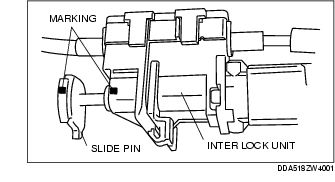
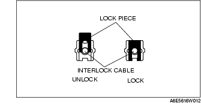

Interlock cable adjustment
1. Turn the ignition switch to ON position (engine OFF).
2. Pull up the lock piece of the interlock cable to release the lock.

3. Remove the clip of the selector lever base plate, then remove the interlock cable from the U-groove.

4. Remove the interlock cable from the selector lever.
5. Remove the lock unit from the bracket.
6. Verify that the markings on the slider pin and the lock unit are aligned.

7. Push the interlock cable.

8. Push the snap pin (or a ø1.5 round bar or similar.) into hole A by fully pushing the slider pin in.

9. Fully pull the end of the interlock cable to the selector lever.

10. Push the snap pin into hole B and hole C of the lock unit until it passes through.

11. Disconnect the brake switch connector.
12. Remove the brake switch. (See BRAKE PEDAL REMOVAL/INSTALLATION.)
13. Install the new brake switch. (See BRAKE PEDAL REMOVAL/INSTALLATION.)
14. Install the lock unit to the bracket. (See Interlock Cable Installation Note.)
15. Rotate the slider pin to release the lock, and verify that the it slides freely.

16. Verify that the slider pin contacts the brake pedal stopper rubber and rotate the slider pin to lock.
17. Install the interlock cable end onto the interlock link on the selector lever.

18. Fit the interlock cable in the U-groove in the selector lever base plate and install the clip.
19. Press the interlock cable lock piece in until it is locked.

- • Applying a load to the interlock cable while pressing the lock piece in can affect the lock unit operation.
20. Remove the snap pin from the lock unit hole A, B and C.

21. Connect the brake switch connector with the brake pedal released.
- • The clearance between the brake switch and the brake pedal is automatically adjusted to the correct amount when the brake switch connector is connected after the brake switch has been properly installed. If the brake switch is not properly installed or the connector is connected before installation, the clearance may be incorrect, causing a brake light malfunction. Therefore, always verify that the brake switch is properly installed before connecting the connector.
- • Once the brake switch clearance has automatically been adjusted, it cannot be adjusted again. Therefore, replace the switch with a new one when replacing the power brake unit or the pedal, or performing any procedure that changes the pedal stroke.
22. Inspect shift lock operation. (See SHIFT-LOCK INSPECTION.)